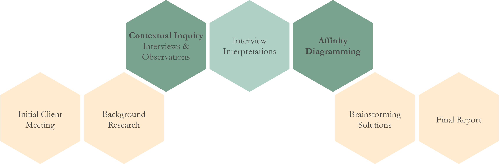
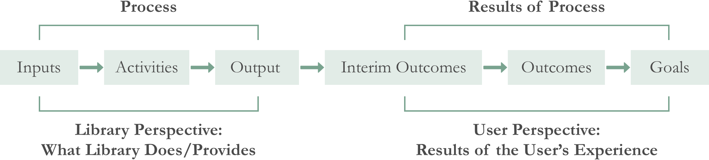
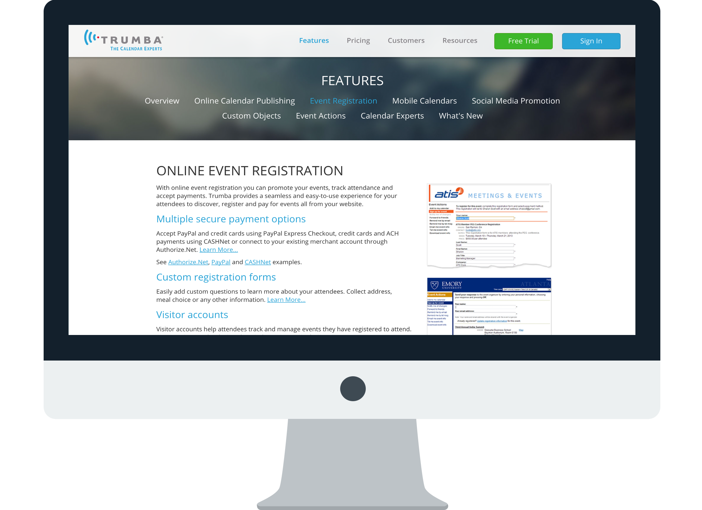
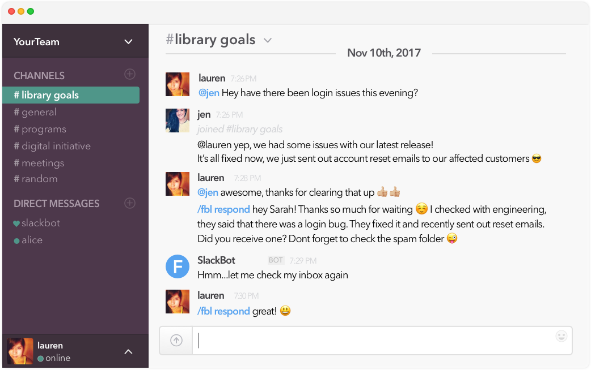

Contextual Inquiry in Service Design
Kylie Wojciechowski, Han Gao,
Huyen Phan, Raphael Ku
Graphic Designer, Photographer, Secondary Program Manager
Interviews, Contextual Inquiry,
Affinity Diagram
Aug 2017 - Dec 2017
The client is transitioning from viewing itself as a regional reference library to a community learning center that offers resources to its city residents of all ages. According to its annual report, the Library’s mission is to become “the go-to place to learn for life”. To this end, its staff is committed to the development of family and digital literacy and the creation of a community gathering space through a full schedule of workshops, group meetings, services, tutorials, activities, programs, and resources. However, their current methods of “head-counting” and obtaining feedback from residents who use the aforementioned resources are not standardized, comprehensive, or particularly efficient. Therefore, the client aims to develop:
Accordingly, our team seeks to evaluate existing practices with regard to feedback collection for programming initiatives and make recommendations to streamline and standardize collection methods.
Our design process can be broken down into seven steps, from the very first meeting with the client to the final report with analyses and recommendations. Contextual inquiry and affinity diagramming were the two most important stages that really help navigate our final solutions.
We constructed semi-structued interviews with a total of six individuals, including members of both the administration and general Library staff. In each interview, two members of our team were present: one conducted the interview, and the other acted as a dedicated notetaker. Observations were also an important part of our qualitative method, in order to better understand the challenges that the client was facing.
Questions from an interview could be:
After all the interviews, we gathered 250 discrete affinity notes capturing single facts emerging from either the interview or our observation and categorized each according to theme or sentiment. We then did second- and third-level categorization as a way to pinpoint the specific challenges faced by the client, those that go beyond the lack of a formalized feedback collection methodology, which collectively creating an final affinity wall.

In this affinity diagram, six main findings characterizing pain points and client problems were found, which fell into three categories:
Lack of Standardized
Work Processes
Lack of Motivation
for Feedback Collection
Lack of Organizational
Resources
Our team brainstormed ways to tackle these challenges facing by the client, which guided 14 specific final recommendations, out of which four of them are featured below.
Given that there's no formal framework in place for program planning, in coordination with another key finding that there is no formal framework in place for program success or impact measurement, we recommend using outcome measurement as a program planning tool for programs that meet the criteria.
To better manage the registration process, we recommend extending the current utility of Trumba to include the built-in event registration tool in addition to the calendaring option. With this tool, custom registration forms can be created for programs either instead of or in coordination with the current system of program registration.
Leverage the use of tablets in digital feedback collection during or immediately after a program by setting up dedicated survey stations on the side of the room.
For the purpose of better communicating the needs and expectations for the Library programs between the administration team with other Library staff, we recommend the administration team to promote internal Library communication related to program purposes and desired outcomes, while incorporating team communication and collaboration tools such as Slack.
This project was conducted over the course of three months in the fall of 2017 in partnership with a regional public library. For confidential concerns, all client-related information are hidden and removed. A final report was made that documents our team’s detailed research methodology, findings, and recommendations in relation to identifying inconsistencies with existing methods, leveraging current practices and introducing low-resistance ways to not only collect but also critically analyze and glean meaning from patron feedback. If you are interested in learning more, please feel free to contact me for a copy of the full report!